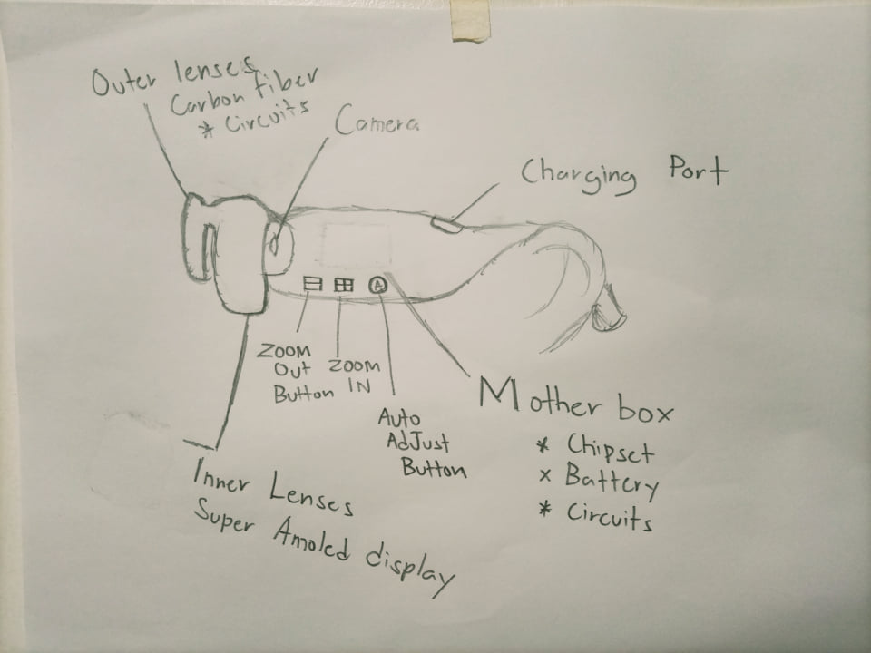
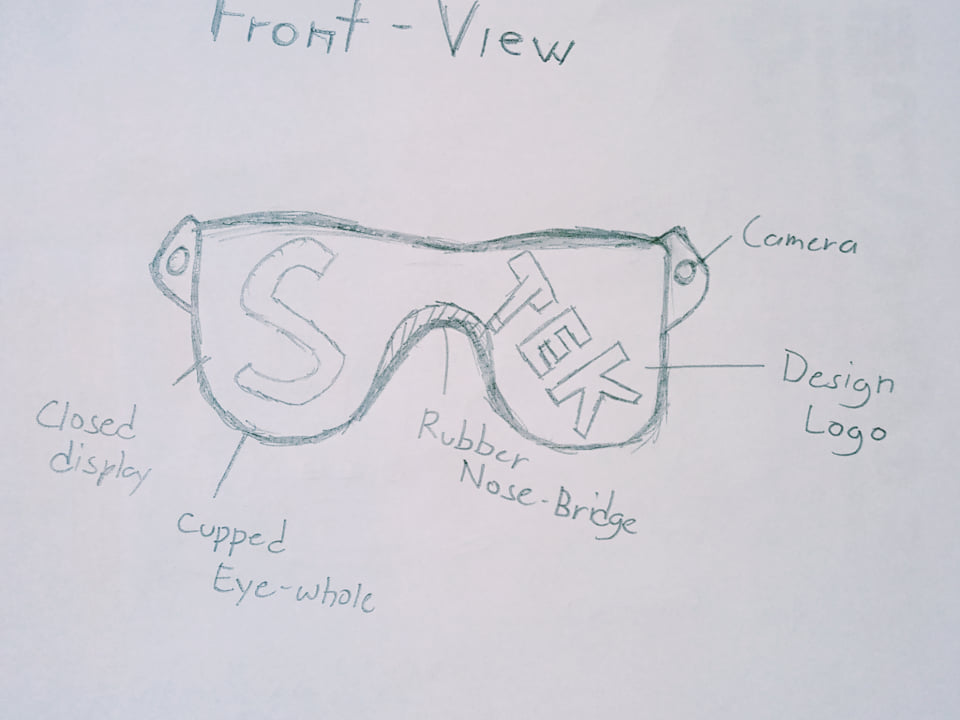

|  |
| The concept - came for the literal design of comic a book hero iron man. edith although in the movie edith is a weapon the glasses designed is almost identical to edith in terms of it is made to serve it's master in terms of what He/She needs. it might not summon Robots to do your bidding but edith is so much more than your average eyewear. |
| Back |